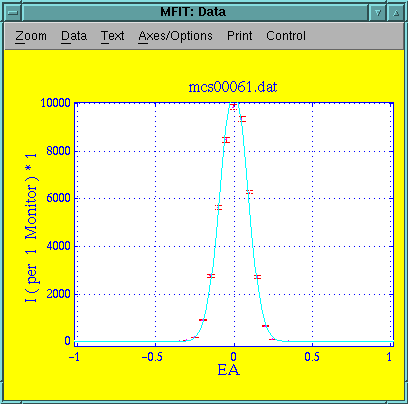
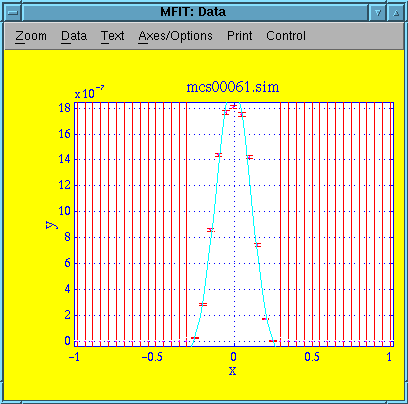
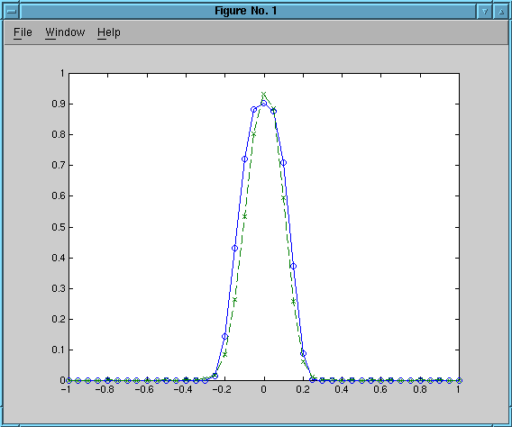

This experiment is an EA-scan in 3-axis focusing mode on the Al2O3 sample. 5meV neutrons with the filter down. Collimation is 30' in the S-A position and open A-D.
Parameter Value Uncertainty Amplitude 1.0558e+04 1.8867e+02 Centre 0.0000e+00 8.8665e-04 Width 8.7752e-02 2.1225e+00 Background 1.1409e+01 0.0000e+00 Chi^2 10.5979 Q(Chi^2) 4e-126
Data file: mcs00061-1.sim
Every point from simulation of 2e7 neutrons. Intrument definition alu-3axis.instr revision 1.2.
Parameter Value Uncertainty Amplitude 2.1595e-06 3.5037e-08 Centre -4.0924e-03 1.0188e-03 Width 1.1311e-01 2.7864e-03 Background -1.7269e-07 2.3820e-08 Chi^2 23.7736 Q(Chi^2) 0 